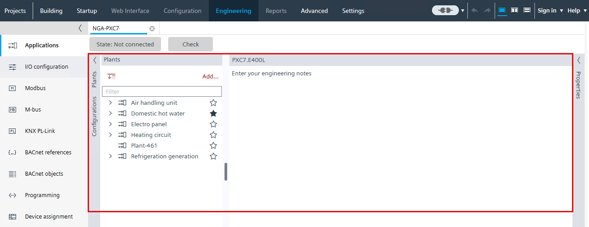

Working with plants
Plants are added directly from the Plants > Add option in the plant navigation view or from an existing plant configuration.
Prerequisites
- ABT Site is in Plants view.
- Engineering > Plants > Plants tab is selected.

Plants are added directly from the Plants > Add option in the plant navigation view or from an existing plant configuration.
